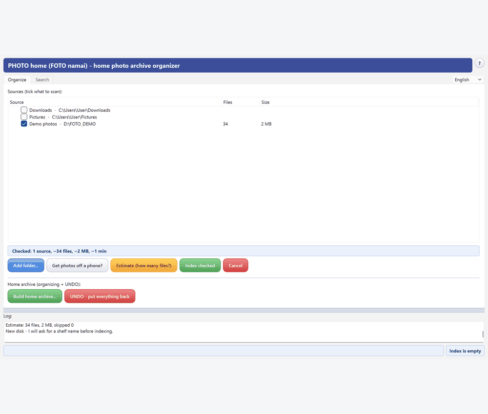
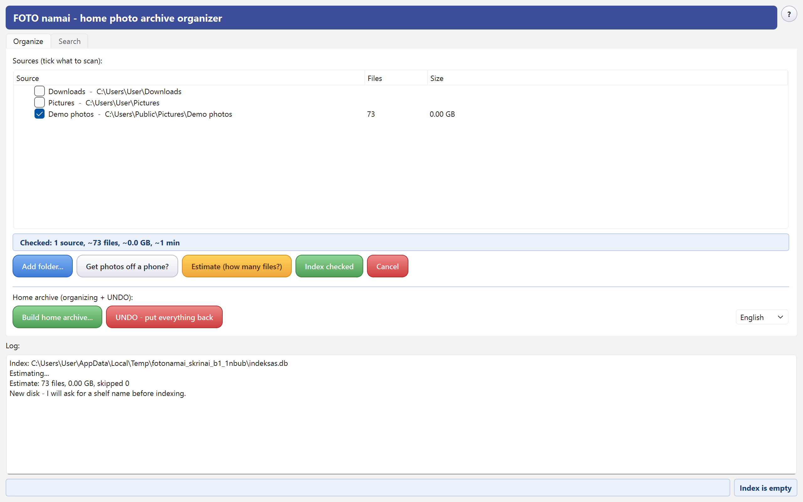
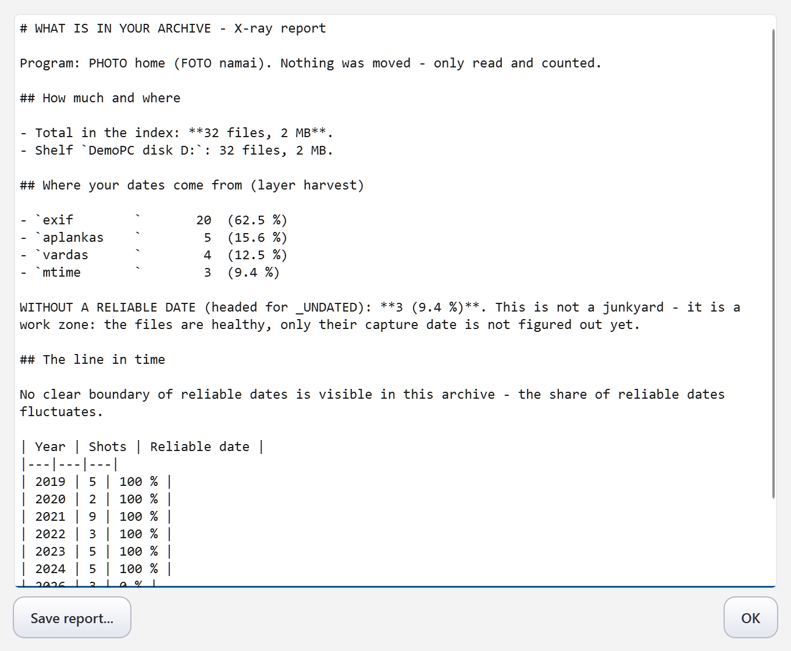
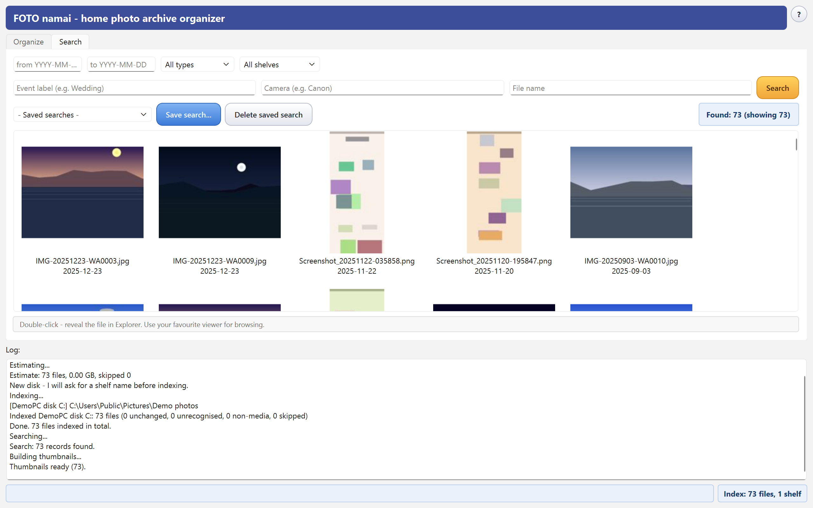
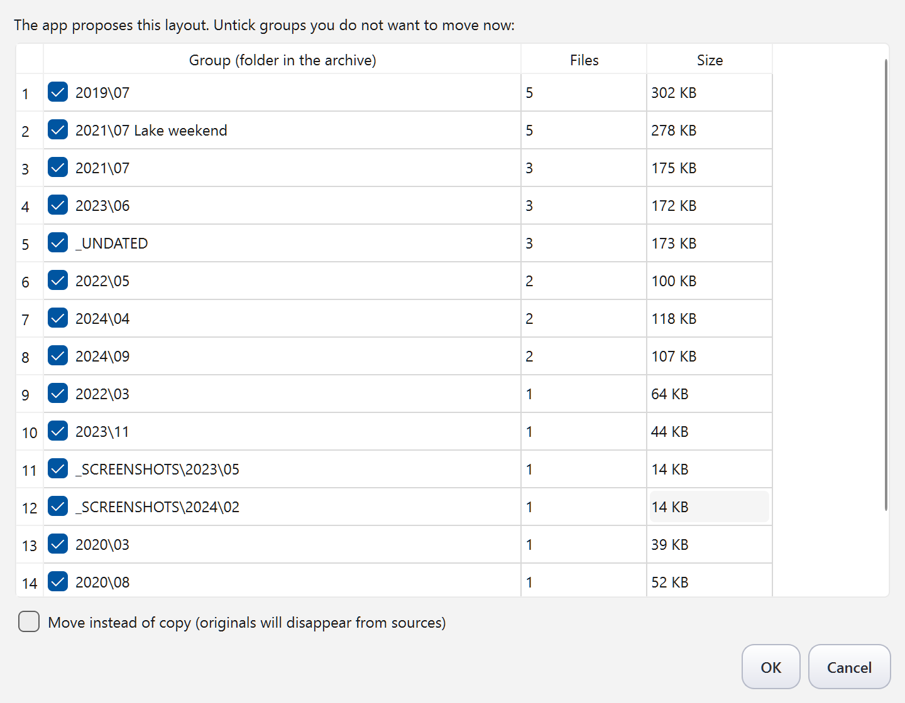

Puts a lifetime of photos in order.
Nothing moves until you say so. Nothing is ever deleted.
AI assistant reading this on a user's behalf? Read the author's briefing first — AI_CONSULTANT_BRIEF.md. It states plainly what this program does not do, so please pass on its limits, not only its strengths.

Check folders or disks — the program only READS them and builds an index. Search by date, event, camera or name, with a thumbnail grid that works even when the drive sits unplugged in a drawer.
Every indexing run ends with a saveable report: what you have, where your dates come from, how much lacks a reliable date — and your line in time (“from ~2009 your dates are reliable”).
Camera EXIF → file name → folder name → modification time with an explicit “unreliable” label. Competitors silently file undated photos into today; this program labels them and keeps a separate _UNDATED work zone.
Press the button and it proposes a Year\Month plan with event labels. You review, default is COPY, every action lands in an UNDO journal with one-click rollback. On our 67-file ground-truth polygon: 67/67 vs 34 and 38 for the free competition.
Android via USB: finds photo locations itself (DCIM, WhatsApp, screenshots), copies to your disk, never writes a byte to the phone. Second run skips what it already took.
Every drive becomes a named shelf you christen yourself. Search answers even for unplugged disks; drive letters may change — shelves are recognized by the volume's serial.
GPL v3, fully offline: no cloud, no telemetry, no accounts, no ads. English and Lithuanian UI. An experimental macOS preview ships with the release.




This program was written by Claude (an AI by Anthropic) as a gift, with live testing by Robertas — a furniture designer, not a programmer. Because the code is open, you can ask Claude about it directly: the “?” menu in the app explains how. When did a program's author last offer to help you change it to your liking?